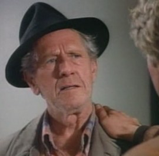

|
Navn: Harry Jacskon John Anderson Barn: Ellen Jackson |
 |
Harry Jackson er bestefaren til MacGyver. Denne rollen ble spilt av John Andersen. MacGyver har et spesielt forhold til bestefaren og dette forholdet ble enda sterkere da faren til MacGyver døde. MacGyver lærte mye om livet fra Harry som ble en slags farsfigur for han.
Syv år etter at faren til MacGyver døde, flyttet Harry til Alaska. Etter det kom han bare på besøk av og til, for eksempel på bursdagen til MacGyver.
Harry ble sett i fire episoder før han døde av hjerteinfarkt
i: Du er nå på Harry Jackson siden
Karakter meny:
| MacGyver | |
| Jack Dalton | |
| Harry Jackson | |
| Murdoc | |
| Pete Thornton |